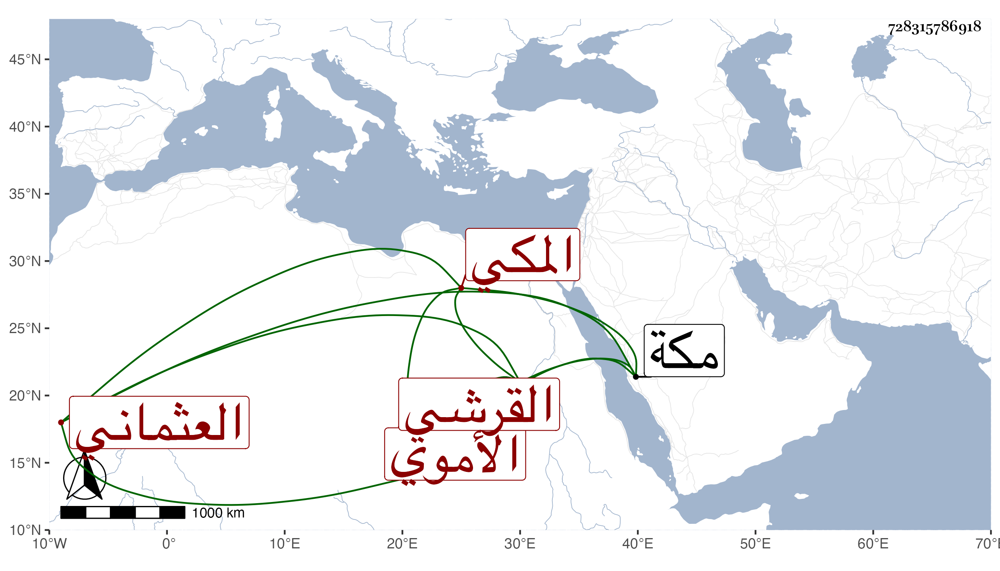

0902Sakhawi.DawLamic.ITO20230111-ara1.EIS1600.728315786918
Biography ID: 728315786918
234
محمد بن عبد الله بن أبي عبد الله محمد بن الرضى محمد بن أبي بكر بن خليل القرشي الأموي العثماني المكي الماضي حفيده قريبا . أجاز له في سنة خمس العراقي والهيثمي وابن صديق والزين المراغي وعائشة ابنة ابن عبد الهادي . ومات بمكة في آخر ليلة مستهل المحرم سنة إحدى وثلاثين أو التي قبلها . وقال ابن فهد مرة : سنة بضع وثلاثين .
